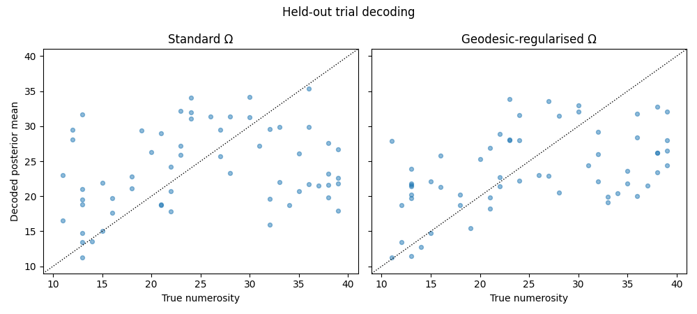
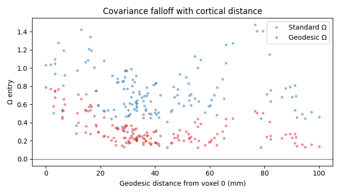

Note
Go to the end to download the full example code.
Geodesic-regularised noise model for trial-wise decoding¶
For Bayesian decoding from an encoding model, the noise covariance \(\Omega\) between voxels matters as much as the tuning curves themselves. The simplest assumption is uncorrelated isotropic noise (diagonal \(\Omega\)), but real fMRI noise has substantial spatially-structured correlations — voxels that sit near each other on the cortical sheet share more noise than distant ones.
braincoder’s braincoder.optimize.ResidualFitter lets you
parameterise this directly. With D=None (default) it fits a model
where covariance is driven only by tuning similarity (\(\tau\tau^T\))
plus an isotropic component. With D=<pairwise distance matrix> it
adds a distance-modulated component:
where \(D\) is voxel-to-voxel distance, and \(\alpha,\beta\) are learned from data. Plug in geodesic distance on the cortical mesh (rather than Euclidean) and you respect the fact that two voxels sitting on opposite banks of a sulcus are close in 3D but functionally far apart.
This example fits a numerosity tuning model in right parietal cortex (NPCr), then compares decoding with isotropic-ish vs. geodesic-regularised \(\Omega\).
import matplotlib.pyplot as plt
import numpy as np
import pandas as pd
from braincoder.models import LogGaussianPRF
from braincoder.optimize import ParameterFitter, ResidualFitter
from braincoder.utils.cortex import geodesic_distance_matrix
from braincoder.utils.data import load_pratcarrabin2025_npc
from braincoder.utils.stats import (
fit_r2_mixture,
get_rsq,
)
Load the demo bundle and select responsive voxels¶
We re-run the same mixture-model selection from example 1 so the
notebooks are independent. We then keep only voxels with
\(P(\\text{signal} \\mid r^2) \\ge 0.8\) and restrict to one
stimulus range (wide) to keep the model simple.
bundle = load_pratcarrabin2025_npc()
r2 = bundle['r2']
paradigm_all = bundle['paradigm']
data_all = bundle['data']
r2_wb = bundle['r2_wholebrain'].get_fdata()
mask_wb = bundle['brain_mask'].get_fdata().astype(bool)
fit = fit_r2_mixture(r2_wb[mask_wb])
# Noise μ + 2σ on the logit scale — see example 1 for the rationale.
threshold = 1.0 / (1.0 + np.exp(-(fit['noise_mu'] + 2 * fit['noise_sigma'])))
keep = r2.index[r2 > threshold]
print(f'Kept {len(keep)}/{len(r2)} voxels (within-sample R² ≥ {threshold:.3f})')
is_wide = paradigm_all['range'].values == 'wide'
paradigm = paradigm_all.loc[is_wide].reset_index(drop=True)
data = data_all.loc[is_wide, keep].reset_index(drop=True)
data = data.astype(np.float32)
# Per-voxel z-score within the kept set so the model only sees signal scale.
data = (data - data.mean(axis=0)) / data.std(axis=0).replace(0, 1)
print(f'Data: {data.shape} (trials × voxels)')
Kept 155/852 voxels (within-sample R² ≥ 0.085)
Data: (240, 155) (trials × voxels)
Fit a Log-Gaussian PRF per voxel¶
The encoding model has 4 parameters per voxel — mu (preferred numerosity), sd (tuning width), amplitude, baseline.
stim = paradigm[['n']].astype(np.float32).values
model = LogGaussianPRF(parameterisation='mu_sd_natural')
n_train = int(0.75 * len(stim))
train_idx = np.arange(n_train)
test_idx = np.arange(n_train, len(stim))
fitter = ParameterFitter(model, data.iloc[train_idx],
paradigm[['n']].iloc[train_idx])
init = pd.DataFrame({
'mu': np.full(data.shape[1], 25.0),
'sd': np.full(data.shape[1], 10.0),
'amplitude': np.full(data.shape[1], 1.0),
'baseline': np.full(data.shape[1], 0.0),
}, index=data.columns, dtype=np.float32)
# Coarse grid-init helps the optimiser find a decent starting mu.
mu_grid = np.linspace(10, 40, 16, dtype=np.float32)
sd_grid = np.array([5., 10., 20.], dtype=np.float32)
amp_grid = np.array([0.5, 1.0, 2.0], dtype=np.float32)
base_grid = np.array([0.0], dtype=np.float32)
init = fitter.fit_grid(mu_grid, sd_grid, amp_grid, base_grid)
pars = fitter.fit(max_n_iterations=600, init_pars=init,
noise_model='gaussian', learning_rate=0.05,
progressbar=False)
train_pred = model.predict(paradigm=paradigm[['n']].iloc[train_idx],
parameters=pars)
train_pred.index = data.iloc[train_idx].index
train_r2 = get_rsq(data.iloc[train_idx], train_pred)
print(f'Train R² — median {np.nanmedian(train_r2):.3f}, '
f'p90 {np.nanpercentile(train_r2, 90):.3f}')
0%| | 0/1 [00:00<?, ?it/s]
100%|██████████| 1/1 [00:00<00:00, 31.19it/s]
Train R² — median 0.115, p90 0.174
From an fmriprep folder to a geodesic distance matrix¶
In a real project the cortical mesh comes straight from fmriprep, which writes a triangulated white-matter surface per hemisphere in the subject’s T1w (anatomical) space:
derivatives/fmriprep/sub-XX/anat/sub-XX_hemi-L_white.surf.gii
derivatives/fmriprep/sub-XX/anat/sub-XX_hemi-R_white.surf.gii
Both are GIfTI files: the first data array holds vertex
coordinates in mm (n_vertices × 3), the second holds the
integer triangle indices (n_faces × 3). Because they live in
T1w space they line up directly with any volumetric mask you also
resampled to T1w (which is the default for fmriprep space-T1w
BOLDs).
The full recipe — written here against an imaginary fmriprep folder so you can lift it into your own project unchanged — is:
import nibabel as nib
from scipy.spatial import cKDTree
from braincoder.utils.cortex import geodesic_distance_matrix
# 1) Load the white-matter surface (right hemi here).
gii = nib.load('derivatives/fmriprep/sub-XX/anat/'
'sub-XX_hemi-R_white.surf.gii')
vertices = gii.darrays[0].data.astype(np.float32)
faces = gii.darrays[1].data.astype(np.int32)
# 2) Get voxel-centroid mm coordinates from your ROI mask
# (T1w-space NIfTI; assumes you already have a NiftiMasker
# or just an ROI boolean array + the mask image).
mask_img = nib.load('roi_mask_space-T1w.nii.gz')
ijk = np.argwhere(mask_img.get_fdata().astype(bool))
voxel_xyz = nib.affines.apply_affine(mask_img.affine, ijk).astype(np.float32)
# 3) Snap each voxel centroid to its nearest mesh vertex.
tree = cKDTree(vertices)
dist, nearest_vertex = tree.query(voxel_xyz)
# 4) Geodesic distance matrix between those vertices.
# Dijkstra along mesh edges; expensive on the full hemisphere,
# cheap if you crop to a neighbourhood of your ROI first.
D = geodesic_distance_matrix(vertices, faces,
source_indices=nearest_vertex)
That’s the whole pipeline. The demo bundle below ships a pre-cropped right-hemisphere patch (so we don’t have to lug around a ~150 k-vertex full hemisphere) together with the per-voxel mm coordinates — but otherwise the steps are exactly the same.
Build the geodesic distance matrix (against the bundled patch)¶
We re-do steps 3 and 4 from the recipe above against the bundle’s data, so this is real, runnable code that mirrors what you’d do on your own fmriprep outputs.
from scipy.spatial import cKDTree # noqa: E402
vertices = bundle['surface_vertices'] # (n_patch_vertices × 3) float32, mm
faces = bundle['surface_faces'] # (n_patch_faces × 3) int32
# Voxel-centroid mm coordinates inside NPCr (pre-computed in the bundle,
# but the same thing you'd build with apply_affine on your own NIfTI).
voxel_xyz = bundle['voxel_coords_mm'].loc[keep, ['x', 'y', 'z']].values
# Snap each NPCr voxel to its nearest white-matter vertex.
tree = cKDTree(vertices)
snap_dist, nearest_vertex = tree.query(voxel_xyz)
print(f'Voxel→vertex snap distance: '
f'median {np.median(snap_dist):.2f} mm, '
f'p95 {np.percentile(snap_dist, 95):.2f} mm')
# Pairwise geodesic distance between the snapped vertices.
D = geodesic_distance_matrix(vertices, faces,
source_indices=nearest_vertex,
progressbar=False)
print(f'Distance matrix: {D.shape}, '
f'median pairwise distance {np.median(D[np.triu_indices_from(D, k=1)]):.1f} mm')
Voxel→vertex snap distance: median 1.09 mm, p95 2.63 mm
Distance matrix: (155, 155), median pairwise distance 32.9 mm
Fit two noise models¶
Each ResidualFitter is fit to the same residuals; the only
difference is whether we pass the geodesic distance matrix.
resid = data.iloc[train_idx].values - train_pred.values
resid_df = pd.DataFrame(resid, columns=data.columns)
# ``ResidualFitter`` needs a ``W Wᵀ`` template covariance that summarises
# how voxel responses co-vary across the stimulus range. We compute it
# once over a dense stimulus grid and reuse it for both fits below.
stim_grid_fit = pd.DataFrame({'n': np.linspace(10, 40, 31)})
stim_grid_fit.index.name = 'stimulus'
model.init_pseudoWWT(stim_grid_fit, pars)
print('Fitting Ω without distance regularisation …')
rf_std = ResidualFitter(model, data.iloc[train_idx],
paradigm[['n']].iloc[train_idx],
parameters=pars)
omega_std, dof_std = rf_std.fit(method='t', init_dof=10.0,
max_n_iterations=400, progressbar=False)
print('Fitting Ω with geodesic-distance regularisation …')
rf_geo = ResidualFitter(model, data.iloc[train_idx],
paradigm[['n']].iloc[train_idx],
parameters=pars)
omega_geo, dof_geo = rf_geo.fit(method='t', init_dof=10.0,
D=D, init_alpha=0.5, init_beta=0.05,
max_n_iterations=400, progressbar=False)
print(f' fitted dof: std={dof_std:.1f}, geo={dof_geo:.1f}')
print(f' fitted α/β: α={rf_geo.fitted_omega_parameters["alpha"]:.2f}, '
f'β={float(rf_geo.fitted_omega_parameters["beta"]):.3f}')
Fitting Ω without distance regularisation …
init_tau: 0.8757237792015076, 1.0135356187820435
USING A PSEUDO-WWT!
WWT max: 69.62195587158203
Fitting Ω with geodesic-distance regularisation …
init_tau: 0.8757237792015076, 1.0135356187820435
USING A PSEUDO-WWT!
WWT max: 69.62195587158203
fitted dof: std=6.8, geo=10.8
fitted α/β: α=0.93, β=0.088
Decode the held-out trials with each Ω¶
model.get_stimulus_pdf returns the posterior \(P(s \\mid y)\)
over a stimulus grid, given the data, fitted parameters, and noise
model. We compute it for each held-out trial under both Ωs and
compare the posterior means.
stim_grid = pd.DataFrame({'n': np.linspace(10, 40, 60)})
stim_grid.index.name = 'stimulus'
post_std = model.get_stimulus_pdf(
data.iloc[test_idx], parameters=pars, stimulus_range=stim_grid,
omega=omega_std, dof=dof_std)
post_geo = model.get_stimulus_pdf(
data.iloc[test_idx], parameters=pars, stimulus_range=stim_grid,
omega=omega_geo, dof=dof_geo)
def posterior_mean_and_sd(post, grid):
s = grid['n'].values
p = post.values / post.values.sum(axis=1, keepdims=True)
mean = (p * s).sum(axis=1)
var = (p * (s[None, :] - mean[:, None]) ** 2).sum(axis=1)
return mean, np.sqrt(var)
mu_std, sd_std = posterior_mean_and_sd(post_std, stim_grid)
mu_geo, sd_geo = posterior_mean_and_sd(post_geo, stim_grid)
true_n = paradigm['n'].iloc[test_idx].values
err_std = mu_std - true_n
err_geo = mu_geo - true_n
print(f'Test posterior-mean RMSE std: {np.sqrt(np.mean(err_std**2)):.2f}, '
f'geo: {np.sqrt(np.mean(err_geo**2)):.2f}')
Test posterior-mean RMSE std: 9.69, geo: 8.32
Visualise¶
fig, axes = plt.subplots(1, 2, figsize=(10, 4.5), sharey=True)
for ax, mu_post, label in [(axes[0], mu_std, 'Standard Ω'),
(axes[1], mu_geo, 'Geodesic-regularised Ω')]:
ax.scatter(true_n, mu_post, alpha=0.5, s=18, color='#1f77b4')
lim = (true_n.min() - 2, true_n.max() + 2)
ax.plot(lim, lim, 'k:', lw=1)
ax.set_xlim(lim); ax.set_ylim(lim)
ax.set_xlabel('True numerosity')
ax.set_title(label)
axes[0].set_ylabel('Decoded posterior mean')
fig.suptitle('Held-out trial decoding')
plt.tight_layout()
plt.show()

Inspect Ω structure¶
Sort voxels by their geodesic distance to a seed voxel and look at the implied covariance row. The geodesic-regularised \(\\Omega\) should drop off smoothly with distance, while the standard fit can show high correlations regardless of distance.
seed = 0
order = np.argsort(D[seed])
fig, ax = plt.subplots(figsize=(7, 4))
ax.plot(D[seed, order], omega_std[seed, order], '.', alpha=0.4,
label='Standard Ω')
ax.plot(D[seed, order], omega_geo[seed, order], '.', alpha=0.4,
label='Geodesic Ω', color='#d62728')
ax.axhline(0, color='k', lw=0.5)
ax.set_xlabel(f'Geodesic distance from voxel {seed} (mm)')
ax.set_ylabel('Ω entry')
ax.set_title('Covariance falloff with cortical distance')
ax.legend()
plt.tight_layout()
plt.show()

Total running time of the script: (0 minutes 44.455 seconds)